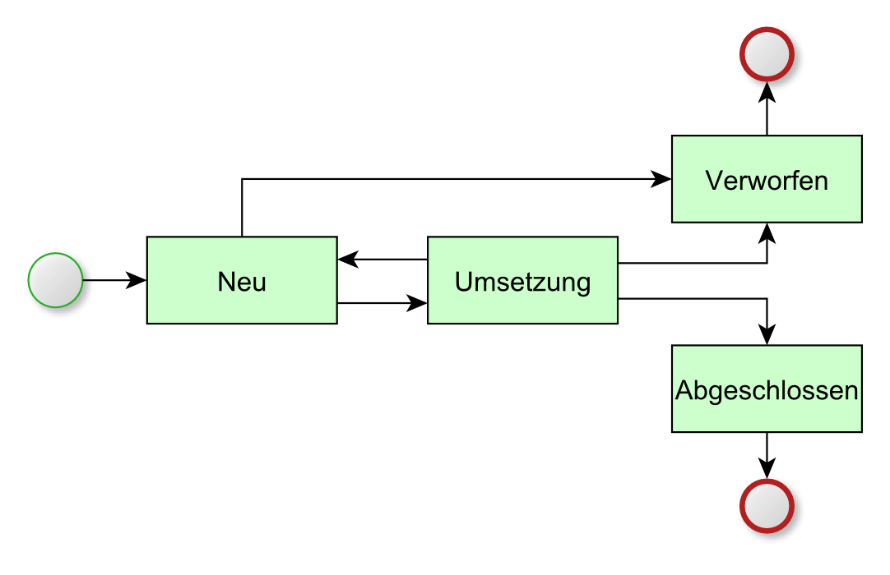

Statusnetz¶
Eine Maßnahme kann verschiedene Status annehmen. Der Status einer Maßnahme gibt Auskunft darüber, in welchem Bearbeitungszustand sich die Maßnahme aktuell befindet. Zudem ist für jeden Status vorgegeben, welcher Folgestatus gewählt werden kann.
Folgende Status sind im Standard definiert:
- Neu
- Die Maßnahme ist neu angelegt und ihre Daten werden erfasst.
- Umsetzung
- Diesen Status hat die Maßnahme so lange wie sie bearbeitet wird.
- Verworfen
- Die Maßnahme erhält den Status Verworfen, wenn die Maßnahme nicht umgesetzt werden soll.
- Abgeschlossen
- Die Maßnahme erhält den Status Abgeschlossen, wenn sie erfolgreich umgesetzt wurde.
Statusübergänge
Die nachfolgende Grafik zeigt alle im System definierten Status sowie die jeweils vom System vorgegebenen Statusübergänge.

Statusnetz einer Maßnahme
Regeln und Automatismen für übergeordnete Maßnahmen
- Eine übergeordnete Maßnahme kann erst dann in den Status Abgeschlossen übergehen, wenn zuvor alle ihre Detailmaßnahmen den Status Abgeschlossen oder Verworfen angenommen haben.
- Wird bei einer übergeordneten Maßnahme der Status auf Verworfen gesetzt, erhalten alle ihre Detailmaßnahmen automatisch den Status Verworfen.
Regeln und Automatismen für Detailmaßnahmen
- Eine Detailmaßnahme kann erst dann den Status Umsetzung annehmen, wenn ihre übergeordnete Maßnahme den Status Umsetzung hat.